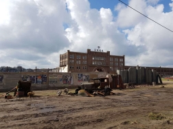

Filmopnames Enka-wijk

Het oude Enka terrein was zondag het decor van een nieuwe film. Het draaien van de film trok veel bekijks op de Doctor Hartogsweg in Ede. Veel konden medewerkers van de Nederlandse filmmaatschappij NL Film en TV niet kwijt erover. Maar in een brief die bij omwonenden is bezorgd, maakte men wel de titel van de film bekend; 'Lyrebird'.
'De film gaat over meestervervalser Han van Meegeren en speelt zich af ten tijde van de bevrijding in 1945', schrijft men verder in de brief. Een 'Lyrebird' is een Australische vogelsoort. Waar de titel op slaat is niet bekend.
Han van Meegeren was een bekende schilder die eigen werk maakte, maar ook werk van onder andere Vermeer en Frans Hals vervalste. Een van de vervalste werken, 'Christus en de overspelige vrouw', werd aan Hermann Göring verkocht. Tegen het einde van de oorlog vonden de geallieerden schilderijen in een zoutmijn. Hierbij vond men ook doeken uit de verzameling van Hermann Göring. In die collectie zat een 'Vermeer' die men niet kon thuisbrengen. Een onderzoek leidde naar Van Meegeren. In november 1947 werd hij tot één jaar gevangenisstraf veroordeeld. Voordat zijn straf inging, overleed Van Meegeren op 58-jarige leeftijd in de Valeriuskliniek in Amsterdam.
Op het terrein aan de Doctor Hartogsweg was onder andere een ingestort huis nagebouwd en er stonden auto's uit de tijd van de oorlog. De weg zelf was afgesloten zodat een auto met cameramensen daarop vrij heen en weer konden rijden. Omwonenden werd verzocht zo weinig mogelijk werkzaamheden te verrichten die het draaien van de film zouden kunnen verstoren. Ook werden omwonenden in de gelegenheid gesteld zich aan te melden bij het castingbureau dat figuranten voor de film verzorgde. Of er daadwerkelijk Edenaren zijn die hebben meegespeeld, is niet bekend. Bron: Ede Stad.nl